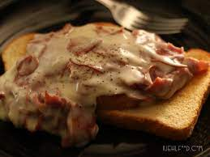

Pizza Bites
Ingredients:
- Pepperoni
- Cheese of your choice (mozerella cheese stick)
- Pillsbury Crescent Rolls
- Butter
- Garlic Powder
- Oregano
- Jar of Pizza Sauce
Directions:
- Preheat oven to 350.
- Cut Pillsbury Crescent Rolls into 8 sections.
- In each section place 2 pieces of pepperoni, and cheese of your choice.
- Roll everything up into a ball making sure you can not see any of the cheese or pepperoni.
- Place all 8 pizza bites onto a baking sheet.
- Melt 2 tablespoons of butter in the microwave.
- Once butter is melted add in a couple of shacks of garlic powder and oregano and mix until all combined.
- Drizzle or brush the butter/garlic powder/oregano mixture on top of each pizza bite.
- Once the oven is preheated to 350, place a baking sheet with pizza bites on it in the oven and cook until the pizza bites are golden brown on top. Should be around 10 minutes but make sure to watch them carefully.
- Once removing the pizza bites from the oven put some pizza sauce into a microwave-safe dish and warm it up in the microwave so you can dip your pizza bites in the pizza sauce.
Creamy Pesto Mac and Cheese With Spinach
Ingredients:
- 2 cups uncooked macaroni noodles
- 2 tsbp all-purpose flour
- 2 cups milk
- 1/2 cup grated parmesan
- 1/4 basil pesto
- 1/2 tsp salt
- blacl pepper
- 1/2 lbs. frozen spinach
Directions:
- Make sure spinach is at room temp and squeeze out extra water.
- Bring a large pot of water to a boil and add macaroni. Boil for 7-10 minutes, or until tender. Then drain macaroni in a colander.
- While the pasta is boiling, prepare the sauce. Add the butter and flour to a small sauce pot. Heat and stir the butter and flour over medium heat until it forms a creamy paste and begins to bubble. Continue to stir and cook for about one minute.
- Whisk the milk into the butter and flour, then allow it to come up to a simmer, while whisking. When it reaches a simmer, the sauce will thicken. Remove the sauce from the heat.
- Whisk the Parmesan and pesto into the sauce until smooth. This will further thicken the sauce. Season the sauce with salt and freshly cracked pepper. Make sure the sauce is well seasoned as the flavors will be less concentrated once the pasta and spinach are stirred in.
- Return the cooked and drained pasta to the large pot (heat turned off) and ass the thawed spinach. Pour the sauce over top, then stir until everything is combined and coated in the sauce.

Pesto Chicken Ring
Ingredients:
- One chicken breast
- Pesto
- Cream Cheese
- Mozerella
- One package of crescent rolls
- Olive Oil
- Salt & Black Pepper
- Oregano
- Basil
Directions:
- Preheat oven to 400 degrees.
- Rinse off chicken breast and pat dry.
- Rub olive oil on both sides of the chicken breast and then season chicken breast with salt, pepper, oregano, and basil on both sides of the chicken breast. (Season with your heart).
- Cook a chicken breast for 25 minutes or until the chicken reaches 165 degrees.
- While, chicken is cooking lay out crescent rolls in a circle with pointy tips facing out and wide ends of crescent rolls overlapping the corners in the middle.
- Then spread an even layer of cream cheese on all parts of the crescent dough.
- Then top crescent dough with an even layer of pesto sauce.
- Once the chicken is done use two forks to pull the chicken apart into shreds.
- Then evenly cover the crescent dough with shredded chicken.
- Top everything with mozerella.
- Next, roll each end of the crescent dough so that they meet in the middle and look like a circle.
- Drizzle a small amount of olive oil over the crescent dough.
- Season the top of the crescent rolls with oregano.
- Cook the crescent ring in the oven at 400 degrees for 10 minutes or until the crescent ring is golden colored.
- Cut it into pieces and enjoy!
Shit On A Shingle
Ingredients:
- 1 1/2 lbs. ground beef
- 1 can cream of mushroom soup
- 1/2 tsp paprika
- 3 cups cooked noodles
- 1/2 cup chopped onion
- 1/2 cup water
- 1/8 tsp salt
- 1/2 cup sour cream
Directions:
Brown beef and cook onions until tender. Pour off the fat and add the remaining ingredients. Pour into 1 ½ quart shallow baking dish. Bake at 400 degrees for 25 minutes.
Crock Pot Pork Roast
Ingredients:
- 6 medium russet potatoes, quartered
- 1 medium white onion, chopped
- 6 medium carrots, diced into 4 pieces
- 4 cloves garlic, roughly chopped
- 3 lbs. boneless pork shoulder roast
- 2 tbsp olive oil
- 6 sprigs rosemary, bundled
- 6 sprigs thyme, bundled
- 2 tsbp balsamic vinegar
- 1/2 cup red wine
- 1/2 cup chicken broth
Pork Dry Rub Ingredients:
- 1/4 cup brown sugar
- 1 tsbp garlic powder
- 2 tsp onion powder
- 2 tsp coarse salt
- 1/4 tsp cinnamon
- 2 tsp dried thyme
- 1 tsp pepper
Thickener Ingredients:
- 1.5 tbsp cornstarch
Directions:
- First, prepare your pork dry rub by mixing together all of the spices in a small bowl. Set aside.
- Then, prepare veggies. Quarter 6 russet potatoes, chop a white onion, dice 6 medium carrots into 4 pieces each, and roughly chop 4 cloves of garlic.
- Place the veggie medley on the bottom of your crockpot.
- Next, rub your pork shoulder roast with the dry rub. Make sure that every nook and cranny is covered in rub.
- Heat around 2 tablespoons of olive oil in a large cast iron skillet over medium/high heat. When olive oil is fragrant, sear pork shoulder for 2 minutes on each side.
- Then, place the pork roast in crock pot on top of the veggies. Make sure you scrape the skillet to get all of the delicious bits of rub off of it and add that to the crockpot, too.
- Create herb bundle, by using bakers twine to tie together thyme and rosemary and set that on top of the pork.
- Next, in a large Pyrex, mix together balsamic vinegar, red wine, and chicken broth. Then, pour that on top of the pork roast.
- Cover crockpot and turn to high. Let cook for around 6-8 hours (flipping pork roast halfway through cook time, if you can, if you can’t no worries!).
- Remove meat and vegetables from the crockpot and discard the herb bundle. Using two forks, pull the pork roast apart into chunks and set aside.
- Place 1/2 cup of the liquid left in the crockpot into a microwave safe Pyrex. Whisk in cornstarch. Place cornstarch mixture into the microwave for 45 seconds (mixture should be thick a gelatinous). Remove from the microwave and whisk the cornstarch mixture into the existing liquid in the crockpot until it thickens into a thin gravy.
- Place pork and vegetables back into the crockpot or transfer it to a platter and mix, coating everything in gravy.